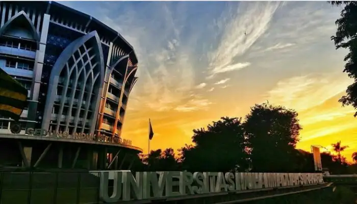
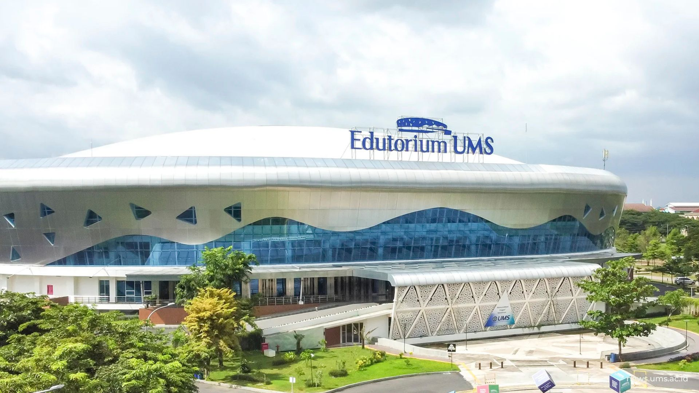

Lokasi LPTK PPG
Mengenal institusi tempat bernaung dan mengembangkan kompetensi keguruan yang unggul dan tepercaya.
Universitas Muhammadiyah Surakarta
Universitas Muhammadiyah Surakarta (UMS) merupakan salah satu pendidikan tinggi yang dimiliki oleh persyarikatan Muhammadiyah. Keberadaan UMS dimulai dengan berdirinya IKIP Muhammadiyah Jakarta Cabang Surakarta pada tanggal 18 September 1958


Visi LPTK
Visi Keilmuan Program Studi Pendidikan Profesi Guru adalah mengembangkan keilmuan pendidikan dan keguruan berbasis IPTEKS dengan pendekatan adaptif dan pembelajaran abad 21, berlandaskan Al- Islam dan Kemuhammadiyahan, integrasi nilai-nilai global dan kearifan lokal, serta prinsip-prinsip profesionalisme guru.
Profil lulusan
Guru yang mampu mengamalkan nilai-nilai Pancasila, menguasai kompetensi guru, merencanakan dan melaksanakan pembelajaran yang berpihak kepada peserta didik, berkomitmen menjadi teladan dan pembelajar sepanjang hayat, serta memiliki dasar-dasar kepemimpinan.
Alamat Resmi Kampus
Jl. A. Yani No.157, Pabelan, Kartasura, Kabupaten Sukoharjo, Jawa Tengah 57162, Indonesia.
Aksesibilitas & Jarak Landmark
Bandara Adi Soemarmo
± 7 KM
Stasiun Solo Balapan
± 6.5 KM
Terminal Tirtonadi
± 6 KM